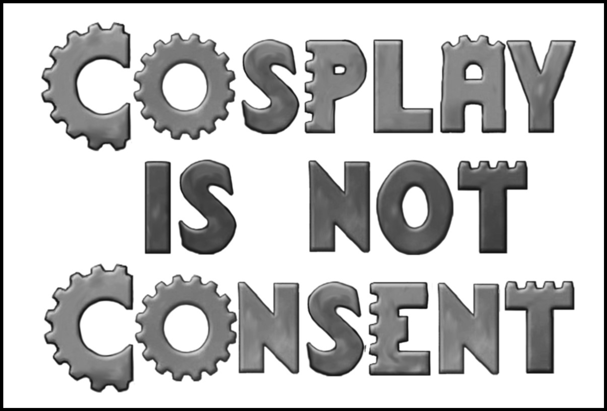

Promenade (Dealers' Room) Hours: November 29, from 1:00 pm - 8:00 pm November 30, from 10:00 am - 6:00 pm December 01, from 10:00 am - 3:00 pm
This is the program guide for Cleveland ConCoction 2020. It should be suitable for use on most browsers and devices. It's an instance of KonOpas, an open-source project providing conventions with easy-to-use mobile-friendly guides.
This guide will work in your browser even when you don't have an internet connection.
You can also install it as a home screen app
- Safari on iPhone/iPad
- Tap on (share), then tap Add to Home Screen.
- Chrome on Android
- Tap on (menu), then tap Add to Home Screen.
- Firefox on Android
- Tap on (menu), then tap Bookmark and select Options, and Add to Home Screen.
- IE on Windows Phone
- Tap on (menu), then tap Pin to Start
Bertram Inn & Conference Center Maps
| Overview (Hotel and Annex) |
| Detail: Annex |
| Detail: Hotel |
| Street View |
{kind=link}
{kind=link}
{kind=link}
{kind=link}
Share this app!
| QR code |
{kind=link}
Links
Quick Reference
- Exhibit Hall
Location: Hayes Ballroom Friday 12:00pm- 8:00pm Saturday 10:00am- 7:00pm Sunday 10:00am- 2:30pm You can shop 'til you drop in the Exhibit Hall. Forget about the crowds and long lines on Black Friday; find those one-of-a-kind holiday gifts at this one-weekend-a-year mall. With a wide variety of things to buy, you are sure to find something for your friends and family. Among the items will be books, jewelry, buttons, records, videotapes, DVDs, magazines and more. And yes, many dealers do take plastic! So keep your credit card warm and be ready to shop!
Note: shoppers in the Exhibit Hall may NOT bring in food or beverages.
- Art Show
Location: McKinley Ballroom C Friday 1:00pm- 9:00pm Saturday 11:00am- 8:00pm Sunday 10:00am- 2:30pm Our Art show features on-site artists and mail-in art with focuses in fantasy, scifi, gaming, comics and more! Come down the Alley and see the art of some awesomely creative people. Various media and styles give us something for everyone. Come enjoy the visual arts, meet our artists and take home something special for you!
General Art Room Rules:
Do not touch the artwork without express permission from the artist.
Do not take pictures of the artwork. Pictures in the room are allowed, as long as permission has been given by the artist, if any artwork is visible in the background.
No food or drink is allowed in the Art Room.
Art Room Silent Auction/Quick Sale Rules:
No bids will be allowed past the end of silent auction, Saturday at 7:00 pm.
All bids are BINDING! Be prepared to pay for ALL silent auctions won.
Art Room silent auction minimum bid is $1. Bids larger than a $1 increase of the previous bid are allowed, but bids must be in minimum increments of $1, and as stated, ALL WINNING BIDS MUST BE PAID.
If you really want something, bid on it, or purchase it at the "Quick Sale" price, if valid. Check back periodically.
Buy it Now/Quick sale: If an item is not bid on, the quick sale (if the item is available for quick sale per the artist) price is valid. Once that price is paid, that item is SOLD. Once an item is bid on, the silent auction starts, and the quick sale price is NO LONGER valid. Items not bid on may be sold at the quick sale price after the silent auction has ended, until the art room closes on Sunday.
If an item is purchased at the quick sale price, the art room requests that the piece remain on display until the close of the room on Sunday, whenever possible. Items with no bids may be available for purchase on Sunday, please check with silent auction staff. If you accidentally write your bid on the wrong sheet, line it out completely. Notify Auction staff. Don't bid with another convention member's badge number unless you have permission (i.e. spouse, significant other). If you bid on it without permission, and the silent auction is won, YOU are responsible for payment.
Do NOT rearrange silent auction items or bid sheets. Report discrepancies to the organizers ASAP. (i.e. missing items, missing bid sheets, duplicated #5, is it 66 or 99?)
If you are ever unsure about a rule, please ask Art Room/silent auction staff. We’re here to help!
- Authors Alley
Location: Grant Meeting Room A Friday 1:00pm- 9:00pm Saturday 11:00am- 10:00pm Sunday 10:00am- 2:30pm - At Cleveland Concoction, the Authors Alley is a wonderful place to meet guest authors, discuss writing projects, and find out about upcoming book releases. Fans and writers can speak with local publishers, spend time with some of the most revered authors in the publishing industry, and find out about new rising stars. Attendees can purchase books at the Authors Alley Library or directly from the authors. There will be organized book signings for particular authors at established times, but authors often volunteer to do signings in Authors Alley at other times too. There is also a full track of literary panels where authors and convention attendees get to discuss a variety of topics all book lovers share.
- Gaming
Location: Annex Pre-Function & Hayes Ballroom Friday 10:00pm- Midnight Saturday 24 hours Sunday Midnight- 3:00pm Beyond the hubbub and hullabaloo of the performances, panels, and various exhibitors lies The Lair. Whether you seek it out or stumble upon it by chance, you've found the center for all things gaming. Whether you love role playing, board games, or cards, you'll find something here to tickle your fancy. We’re here, 24 hours a day, from Opening Ceremonies till the close of Con. Feel free to borrow a game from the Concoction Game Library, try out one of our Play to Win games, or join a scheduled game run by one of our volunteer Game Masters.
A huge thank you goes out to those who have signed up to be a Game Master here in The Lair. Your hard work preparing for this weekend is one of the foundations that the gaming department is built on. You entertain and challenge our attendees and help create stories that they'll take home to others who will hopefully join us next year. We appreciate everything you do.
When you aren't playing in a scheduled game, we invite you to sign out one of our Play-to-Win games. All we ask is that you give a short review of the game after you're done playing and at the end of Con, someone who played the game will take it home with them. Like the game you're playing? Play it again and increase your chances of winning it! A big thank you also goes out to Double Exposure and the Envoy program for providing over 60 Play-to-Win games this year.
Whether you're playing an old favorite or sitting down to learn a new one, you may find that you have room for one more in your game. We ask that you use the "Player Wanted" markers provided to advertise your willingness to take on an extra player and maybe make a new friend.
Want to win a free membership to the con next year?
Want your name on the coveted Golden Meeple?
Take a shot at our Name the Game contest. For each correct answer, you will earn an entry into our grand prize drawing to win a free membership to Cleveland Concoction 2020!We'd also like to welcome Protospiel to The Lair this year. Ever wonder where all those awesome new games come from? Protospiel is a chance for game designers to bring their prototypes to a social gathering and play test them with each other. These games can range from early concept all the way up to polished product. We wish all of the designers in attendance luck and hope that they gain valuable and useful information from this experience.
Do you love games and gaming? Are you coming back to Concoction next year? Want to score a partial refund on your membership fee? Send an email to volunteers@clevelandconcoction.org and tell them you want to help out in The Lair next year.
- Play-to-Win
The Cleveland ConCoction will conduct a Play-to-Win Program on the weekend of the Con. To be eligible to win, you must play a "play-to-win" game to enter the drawing. Be sure to stop by Gaming to pick up your games and check gaming times. At the end of the Con, a winner will be drawn. This gives you the chance to play and learn new games and have a chance to bring one home! Because our sponsors want to give us the very latest games, this list is subject to change. Read more about our Play to Win games and our sponsors.
- My Little Scythe
- Between Two Cities
- Between Two Castles of Mad King Ludwig
- Paper Tales
- The Bottle Imp
- Gold Fever
- Pyramid Poker
- Cave Paintings
- Costa Ruana
- New York Slice
- Werewords
- Nut So Fast
- Roll For Your Life, Candyman!
- Shogunate
- Pirate 21
- The Resistance
- Coup
- Deadpool vs. The World
- Rollers
- Skull King
- Cover Your Assets
- The Bears and the Bees
- Bad Doctor
- Poetry Slam
- Cahoots
- Viceroy
- Drop It
- Lost Cities: Rivals
- Word Slam
- Dimension
- Soul of the Empire
- Unauthorized
- Jungli-La
- Embark
- The Networks
- Wordsy
- Aura
- Lazer Ryderz
- Sentinals of the Multiverse
- King of the Dice
- Karuba: The Card Game
- Conex
- Ambyria: Shroud of the Shadow Demon
- Ogre Cheerleaders
- Eight Minute Empire
- Haven
- Champion of Earth
- Evil Overlord
- Ice Cool 2
- Orc-lympics
- Pikoko
- Zombie Terror
- Wanted: Rich or Dead
- Palaces
- Little Drop of Poison
- Echidna Shuffle
- Smash Up (Base)
- Istanbul Dice
- Salem 1692
- Tortuga 1667
- Deadwood 1876
- The Lady and the Tiger
- Show & Tile
- Madstone
- Hoard
- Final War Starter Kit
- Papua
- Gretchinz
- Vikings Gone Wild
- Chronicles of Crime
- Chronicles of Crime VR Expansion
- Star Realms: Frontiers
- Hero Realms Base Game
- Action Cats
- Illimat
- Swordcrafters
- Truck Off
- News@11
- Dome Crushers
- Front Line: No Komrades
- Alien Artifacts
- Youth Programming
Location: Grant Meeting Rooms B & C Friday Noon- 10:30pm Saturday 9:00am- 2:00am (Sun) Sunday 9:00am- 2:00pm For Parents attending events with their children:
You are completely and utterly responsible for yourself, your children and your personal belongings.
When leaving a child in the Kid's-Room:
Parents
You will be required to sign your child in whether you stay or not.
Photo Release opt-in/out form must be signed before entering the room. If you choose to opt-out of photos you will be given a colored wristband.
Room waiver must be signed for ALL children being dropped off. Parents are always welcome and we encourage them to attend events along with their children.
Room waiver and photo release form only need to be filled out once and will be good for all events for the duration of the convention.
You must have a working cell phone on your person, we will test it at drop off.
If your child becomes ill, overly emotional or physically or verbally abusive, you will be called and you must come and collect them. If your child becomes abusive and you are asked to come collect them, they will not be allowed back in the Kid's-Room at all for the duration of the convention. Bullying of any form will NOT be tolerated.
If your child is currently sick or has been sick in the last 24-48 hours, they will not be allowed in the Kid's-Room. Sick = a high temperature, coughing, vomiting, diarrhea, any contagious disease/ailment: lice, pink eye, etc...
Parents are responsible for making sure their children know the rules for the Kid’s-Room.
Any unclaimed children at the conclusion of each event will be fed to Cthulhu. Hail Cthulhu! But, seriously, any parent that is contacted on two occasions due to not claiming their child by the beginning of the next event will NOT be permitted to drop their children off for the duration of the convention. You are still very welcome to attend events in the Kid's-Room, but you must stay with your child at all times.
The Kid's-Room staff are not CPR certified. They are simply adult volunteers and will not be held liable for any accident that may occur. This is NOT a daycare. Staff members will also not be responsible for any lost or damaged personal items.
For ALL children under the age of 12:
They MUST be completely & independently potty trained. We do NOT change diapers, We will however, escort them to the bathroom and back again to the Kid's-Room. Children not yet potty trained must have a parent with them at all times.
They MUST be able to take simple instructions in English.
They will NOT have roaming rights. Once you drop them off, they are here until you pick them up at the end of EACH scheduled event. If your child is signed up for several events in a row, you are still required to come back and touch base with a staff member at the end of EACH event.
For ALL children ages 12 and over:
The same rules apply for the older children as they do for the "Under the Age of 12" children. EXCEPT you may opt for your child to have roaming rights.
Children with roaming rights MAY:
- freely come and go during a program that they are signed up for.
- sign themselves out of a kids event to go to another event in the convention, BUT, they must indicate on the pick-up sheet AND speak with a staff member to let them know where they are going.
Children with roaming rights MAY NOT:
- Sign themselves INTO a program even if their parents have previously signed a room waiver and photo release form for them.
- Masquerade
Location: McKinley A Saturday 5:00pm- 7:00pm Signup: Signup for pre-judging is online at http://www.clevelandconcoction.org/costumes--cosplay.html or Saturday morning, check at info point when on site.
Open for anyone! Any theme! Any cosplay genre!
Prizes will be given for:
- Best in Show:
- An attending membership for IndyPopCon, an attending membership to next year's Cleveland ConCoction, and a jumbo sheet of worbla.
- Best Craftsmanship:
- An attending membership to next year's Cleveland ConCoction
- Best Presentation:
- An attending membership to next year's Cleveland ConCoction
- Judges' Choice:
- Certificates
- Children's Participation:
- Certificates
Pre-Judging: Our Con is known for its kind and friendly pre-judging! Let the judges know about your outfit and get killer feedback from some of the Midwest best Cosplayers. No need to wait in line - you will be assigned a 10-minute time slot earlier when you sign up. Please make sure you arrive 5-10 minutes early just in case.
Mainstage Show: Saturday 5:00-7:00pm. Strut your stuff on stage where the entire convention can see you. You'll have a chance to show off your cosplay abilities and outfit before being asked a few quick questions by the Judges. Awards will be awarded at the end. You have up to 2 minutes to cosplay your character and perform if you choose to.
Weapon Policy:
See here: http://www.clevelandconcoction.org/prop-weapons-policy.html
- Masquerade Judges
This year's judges are our three Featured Cosplay Guests;
Knightmage, Nerd Girl Cosplay, and Stitches
- Master of Ceremonies
This year's Master of Ceremonies is: Leeman Kessler of Ask Lovecraft
- ConSuite
Location: Garfield Meeting Room A & Garfield Ballroom Friday 2:00pm- 2:00am (Sat) Saturday 9:00am- 2:00am (Sun) Sunday 9:00am- 3:00pm (room cleanup begins at 1:00pm) Always a place to hang out with fellow fans, the Con Suite continues the tradition this year. Remember, the Con Suite is not meant to provide three squares each day while at the convention. If you are looking for a well-balanced meal, we suggest you check out the hotel restaurants. Room may close early based on usage.
- Lactation & Changing Room
Location: Hospitality Suite 194 Friday Noon- 6:00pm Saturday 9:00am- 6:00pm Sunday 9:00am- 3:00pm Being such a family friendly convention, we can't forget about the moms and dads who like a bit more privacy to change and feed the little ones. This is a hotel guest room, not a convention room, that the hotel is giving to us for this purpose. Please take a moment to thank our hotel for this service!
- Charity Silent Auction
Location: Main Building Atrium Friday Noon- 7:00pm Saturday 10:00am- 7:30pm Sunday 10:00am- Noon Cleveland ConCoction believes in building up our local community as well as supporting and building up the community at large. This year we are holding a silent auction to assist local charities. When gamers and geeks unite we can make dreams a reality! Silent auction bidding ends one hour before the room closes on Saturday. Pick up at silent auction end or all day Sunday.
- Operations
Location: Hospitality Suite 185 Friday 10:00am- Midnight Saturday 24-hours Sunday Midnight- Con End Known as the department that never sleeps, Ops and Security are there to help with questions and concerns. Lost your tribble? Want to volunteer for the con? Need directions? The folks in Ops are there to help. Our Security staff will man the doors at Main Programming and elsewhere to check for con badges. Please be considerate and follow directions.
- Security
Location: Garfield Meeting B & C Friday 10:00am- 10:00pm Saturday 9:00am- 10:00pm Sunday 9:00am- 3:00pm Known as the department that never sleeps, Ops and Security are there to help with questions and concerns. Lost your tribble? Want to volunteer for the con? Need directions? The folks in Ops are there to help. Our Security staff will man the doors at Main Programming and elsewhere to check for con badges. Please be considerate and follow directions.
Note: After hours, you may find Security in the Operations room (Hospitality Suite 185).
- Registration
Location: Garfield Meeting Rooms B & C Friday 10:00am- 10:00pm Saturday 9:00am- 10:00pm Sunday 9:00am- 3:00pm If you're pre-registered, you get a cool custom-printed laminated "keepsake" name badge with a lanyard to wear around your neck.
A con badge is required for all Cleveland ConCoction activities, so DO NOT LOSE YOUR BADGE. No refunds. No exchanges. By accepting this badge, you agree to comply with Cleveland ConCoction "Terms of Attendance" in this program guide. (See next section)
Announced guests and schedules are subject to change. Because of this, please consult any announcements on session room doors or at Registration.
- Terms of Attendance
By purchasing a membership to the Cleveland ConCoction (CleCon) convention, the attendee agrees to comply with the following rules and regulations:
- Each membership admits one person to the convention. Autographs are NOT included with membership.
- Con badges must be worn on the outside of all clothing/costumes and must be presented when entering any part of the convention.
- Your CleCon badge is non—refundable, non-exchangeable and non-transferrable, no matter what the reason. CleCon will not be responsible for lost or stolen ID badges and a badge can only be replaced by purchasing an additional admission.
- All members hereby release CleCon, its organizers, and agents from any liability for loss or damage to persons or property, infringement of any right or any other claim or course of action of any kind.
- The organizers, staff and agents of CleCon reserve the right to deny entry to or remove from the convention facilities any person behaving or threatening to behave in a manner which could reasonably be considered disruptive.
- Children age 12 and under must be accompanied by an adult at all times. Any children dropped off at Cleveland ConCoction, and found wandering unattended, will be turned over to hotel staff.
- By accepting the conditions of membership, you may be videotaped or photographed for future promotion of CleCon.
- Harassment Policy
Cleveland ConCoction is committed to providing a safe and welcoming convention experience for ALL persons. In accordance with this, we are dedicated to ensuring a harassment free convention for all attendees.
Harassment is any form of behavior that is unwelcome, unreciprocated, or unsolicited which makes an unpleasant, humiliating, or intimidating environment for the person who is the target of that behavior.
Harassment includes, but is not limited to, offensive verbal comments, deliberate intimidation, stalking, following, unwelcome photography or videography, inappropriate physical contact, and unwelcome sexual attention.
Attendees asked to stop any harassing behavior are expected to comply immediately.
Attendees who feel they are victim of harassment are asked to firmly and decisively say NO, and report the behavior to ConCoction Security or Staff immediately.
Attendees witnessing harassing behavior are asked to contact ConCoction Security or Staff immediately.
All reports of harassment will be investigated by ConCoction Staff.
Any attendee found in violation of this policy will be given a warning, removal from the convention without refund, or reported to local law enforcement, at the discretion of ConCoction Staff.

- Weapons Policy
- Blades: No live steel. ConCoction defines live steel as any metal weapon CAPABLE of holding an edge.
- Projectile Weapons: No live projectile weapons. This includes, but is not limited to, airsoft guns, ping pong ball guns, silly string guns and squirt guns.
- Prop Guns, even those that are not realistic looking, MUST have an orange tip. All prop guns will need to be brought to the Security Office prior to being worn or carried in the convention areas. Triggers will be zip-tied by Security.
- Personal Protective Devices of any kind are not allowed. This includes, but is not limited to, mace, pepper spray and tasers.
- No flammables. This includes, but is not limited to, lighter fluid, flash powder and fireworks.
- Long Weapons: any long weapon, or weapon like object, such as walking sticks, staffs, pikes or lances MUST be less than six feet in length. If any such prop, even if shorter than six feet, becomes an impedance to flow of traffic around the Convention it will be deemed in violation of this policy.
- It is the responsibility of Convention Attendees to ensure that prop weapons comply with these policies. If you are not sure, ASK. We will have Security Staff at Registration during peak check in times to inspect weapons. If you are checking in during an off-peak time, or if the Security Staff is not at Registration, ask whomever is at Registration and they will locate a member of Security Staff to assist you.
- It is the responsibility of any vendor selling prop weapons to ensure that all weapons are packaged in boxes or wrapped in paper at the time of sale; and it is the responsibility of any purchaser of weapons to IMMEDIATELY remove weapons in violation of this policy from the convention to either a guest room at the hotel or a personal vehicle.
- All local laws and regulations regarding weapons will be in effect at all times.
- Anyone found using a weapon (real, prop or improvised) in a threatening manner will be in violation of this policy.
At the discretion of Convention Staff, exceptions to the above rules will be made for the purposes of the Masquerade Ball and for photo opportunities in DESIGNATED times and places only. All weapons carried around the hotel premises for the Masquerade Ball or photo opportunities must be transported to the designated site in a manner consistent with the weapons sale policy listed above.
Convention and Hotel Staff will have the final decision making authority in all matters regarding weapons.
Anyone found in violation of the ConCoction Weapons Policy will be, at the discretion of Convention Staff, asked to remove the offending weapon from the premises, removed from the Convention without refund, or reported to local law enforcement.
- Taking Care of Your Self: The 5-2-1 Rule
The 3-2-1 Rule is simple and should be followed daily by all attendees. Doing so will allow you to enjoy the con to its fullest and prevent the spread of con crud and con funk. Also known as the 5-2-1 rule, for those of us who need a bit more rack time.
5 hours of sleep (minimum)
Get at least 5 hours of sleep. Preferably in a bed, doesn't have to be yours (but you DO have to have permission if it's not). See our article on hotels. It's considered rude to sleep in panels, especially ones with a capacity crowd. Sleep somewhere. And note that caffeine is not an appropriate substitute for sleep, no matter how much you've had.
2 meals (minimum)
Eating is important. It's how our body gets energy. Eat full meals at least twice during the day. There are local restaurants, the consuite, and restaurants in the hotels. Protein bars are not good substitutes; they may seem like a good and cheap idea beforehand, but you will tire of them.
Keep in mind, though, that overeating can be just as bad as not eating. Try for the healthy options now and then, like a salad, or a chicken sandwich instead of a hamburger (preferably not deep fried). Heavier foods seem more satisfying in the gut at the time, but in the long run, eating less fatty, greasy food will help keep your energy up better.
1 shower (minimum)
For the love of <insert Deity of choice here>, take a shower. Con Funk is not pleasant for your fellow geeks around you. It's gross, disgusting, and all around bad form. Showers are free to all hotel guests. If you don't have a room, ask a friend to use their shower. Make sure to use soap. Standing under a stream of warm water for 30 seconds is not showering.
Patchouli oil, extra deodorant, FeBreeze, cologne, or a fresh change of clothes does not replace a shower 100%, or even 10%. Shower! Even the Klingon giving you the eyes from across the bar likes to think you have showered.